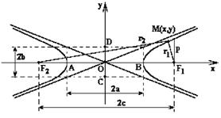
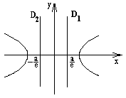

6.3.3. Гипербола
Гиперболой называется геометрическое место всех
точек  , для которых абсолютная величина разности
расстояний до двух заданных точек и (называемых фокусами
гиперболы) постоянна и равна .
, для которых абсолютная величина разности
расстояний до двух заданных точек и (называемых фокусами
гиперболы) постоянна и равна .
, для которых абсолютная величина разности
расстояний до двух заданных точек и (называемых фокусами
гиперболы) постоянна и равна .
Каноническое уравнение гиперболы может быть
получено непосредственно из определения гиперболы. По определению и где
.
Воспользуемся формулой расстояния между двумя точками:
, .
По определению
.
Подставим в это равенство найденные и :
.
Проделаем очевидные преобразования:
Так как , то положим , тогда
или
 Каноническое уравнение
гиперболы
.
Каноническое уравнение
гиперболы
.Полученное уравнение называется каноническим уравнением
гиперболы.

Элементами гиперболы являются:
- точка
 – центр
гиперболы;
– центр
гиперболы; - точки
 и
и  – вершины гиперболы;
– вершины гиперболы; - точки и – фокусы гиперболы;
 – фокусное расстояние,
которое вычисляется по формуле
– фокусное расстояние,
которое вычисляется по формуле
Фокусное
расстояние гиперболы
;
- – действительная ось гиперболы;
- – мнимая ось гиперболы;
Мнимая ось гиперболы
;
- Эксцентриситет гиперболы – эксцентриситет гиперболы, который вычисляется по формуле:
Эксцентриситет
гиперболы
Эксцентриситет определяется отношением осей гиперболы и
характеризует еe форму: чем больше  , тем более
вытянут вдоль мнимой оси основной прямоугольник гиперболы.
, тем более
вытянут вдоль мнимой оси основной прямоугольник гиперболы.
, тем более
вытянут вдоль мнимой оси основной прямоугольник гиперболы.Уравнения директрис гиперболы имеют вид:
Уравнение
директрисы гиперболы
.
Отметим, что , так как .
Асимптоты гиперболы – это прямые, к которым ветви
гиперболы неограниченно приближаются при удалении в бесконечность.
С учётом того, что
Уравнение асимптот
гиперболы
,
уравнения асимптот гиперболы принимают вид .
Фокальный параметр гиперболы
Фокальный параметр
гиперболы
.